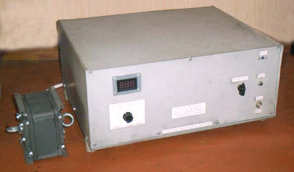
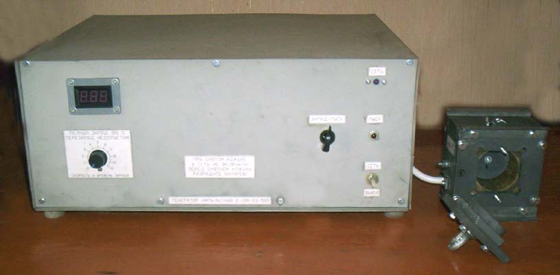
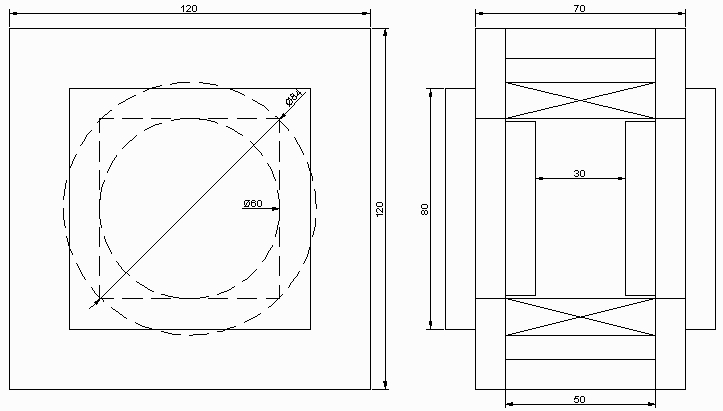
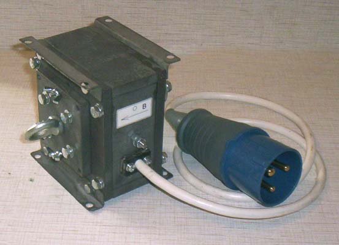
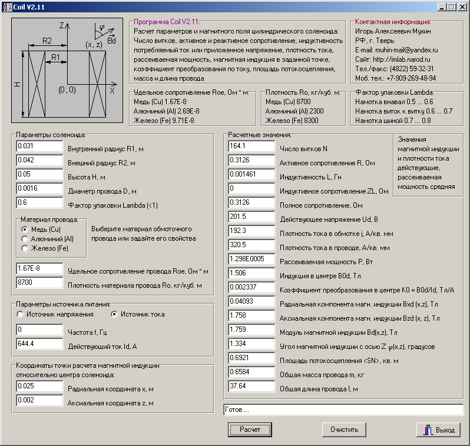
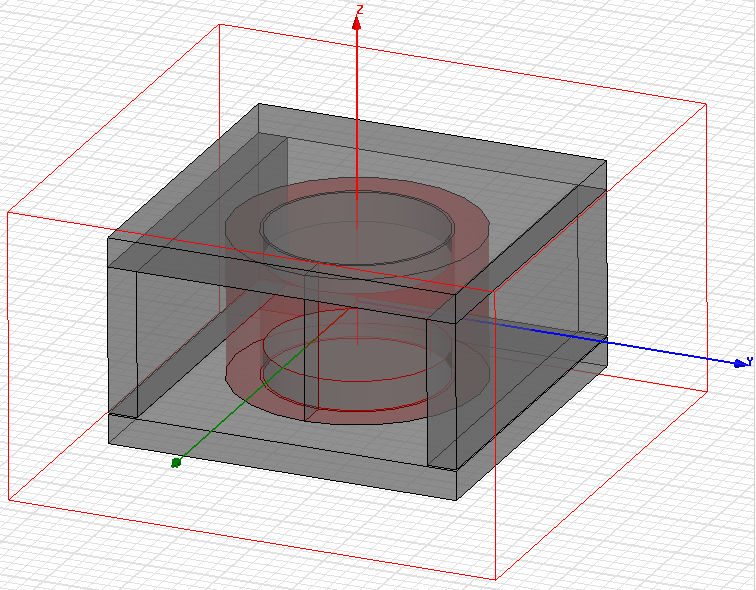
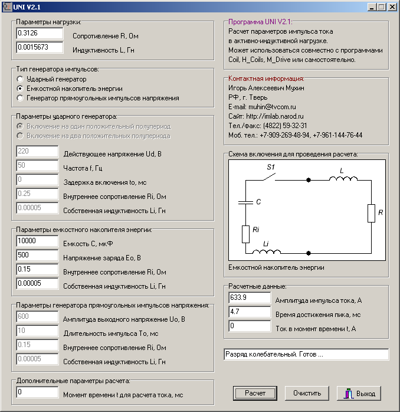
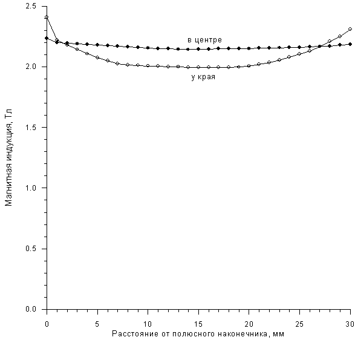
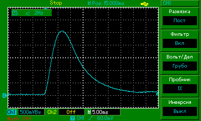

Установка для настройки
рабочей точки редкоземельных постоянных магнитов методом частичного
импульсного размагничивания-домагничивания (диаметр магнита до 60 мм, высота до
30 мм)

1. Введение
Постоянные магниты намагничивают обычно в установках намагничивания [9], причем, как правило, до насыщения для получения максимально возможного значения остаточной магнитной индукции и, соответственно, генерации наиболее сильного магнитного поля в заданной области. В ряде случаев при конструировании и настройке магнитных систем требуется либо стабилизировать магнит, чтобы уменьшить временную деградацию его магнитных свойств, либо подобрать требуемое рабочее значение магнитной индукции. Выполнить эту процедуру можно посредством приложения обратного размагничивающего поля к предварительно намагниченному до насыщения магниту. При использовании высококоэрцитивных редкоземельных постоянных магнитов состава самарий-кобальт или неодим-железо-бор [5] требуемая величина магнитной индукции размагничивающего поля составляет порядка 1 ... 1.5 Тл или даже более. Генерация постоянного магнитного поля такой интенсивности в достаточно большом объеме затруднительна по энергетическим соображениям. Разумной альтернативой может быть использование пошагового импульсного режима частичного размагничивания с последовательным увеличением амплитуды индукции обратного магнитного поля и, при необходимости, импульсного частичного намагничивания (домагничивания) прямым полем, если по каким-либо причинам размагничивание оказалось чрезмерным. С учетом опыта разработки установки для настройки рабочей точки редкоземельных постоянных магнитов [8] была рассчитана и сконструирована аналогичная установка на больший диаметр настраиваемых магнитов.
2. Состав установки и назначение
Установка для настройки рабочей точки постоянных редкоземельных магнитов состоит из емкостного накопителя энергии 1 кДж 500 В [4] и импульсного индуктора с проходным отверстием диаметром 61 мм, в которое вставляются полюсные наконечники с межполюсным зазором 30 мм. Она позволяет производить настройку рабочей точки постоянных магнитов, вписывающихся в цилиндрический объем диаметром 60 мм высотой 30 мм (рабочая зона индуктора). Установка может применяться в лабораторных или производственных условиях. Внешний вид установки показан на рис. 2.1. Постоянный магнит в заданной ориентации крепится в рабочей зоне с помощью приспособлений (прокладок) из немагнитных материалов. Устанавливается некоторый начальный заряд емкостного накопителя для создания обратного размагничивающего поля (обычно порядка 75 % для редкоземельных магнитов), далее генерируется импульс тока и производится контроль магнитной индукции постоянного магнита с помощью тесламетра [6]. Затем в зависимости от результата измерений либо продолжается размагничивание с увеличением уровня заряда, либо создается прямое намагничивающее (домагничивающее) поле противоположной полярности, чтобы вернуть постоянный магнит в предыдущее состояние. Помимо частичного размагничивания редкоземельных постоянных магнитов установка может использоваться как для целей стабилизации (частичного размагничивания), так и для намагничивания до насыщения менее энергоемких магнитов, например, ферритов или ЮНДК [5]. Намагничивание до насыщения редкоземельных постоянных магнитов также возможно при использовании в составе установки более мощного емкостного накопителя 2 ... 8 кДж 900 В [4].

Рис. 2.1. Установка для настройки рабочей точки редкоземельных постоянных магнитов методом частичного размагничивания-домагничивания в составе емкостного накопителя энергии 1 кДж 500 В и индуктора.
3. Технические данные установки:
4. Расчет и конструкция импульсного индуктора
Импульсный индуктор представляет из себя цилиндрический соленоид высотой 50 мм с проходным отверстием диаметром 61 мм, установленный в стальном корпусе (рис. 4.1, 4.2). В проходное отверстие с двух сторон вставляются стальные полюсные наконечники с межполюсным зазором 30 мм. Для подключения к емкостному накопителю энергии используется силовой кабель с разъемом. Индуктор может устанавливаться в произвольном положении на крепежные уголки.

Рис. 4.1. Эскиз импульсного индуктора (упрощенный вид, часть деталей не показана).

Рис. 4.2. Внешний вид импульсного индуктора с кабелем подключения.
Расчет соленоида индуктора выполнен с помощью программ Coil [2] и UNI [3]. Результаты расчета представлены на рис. 4.3 и 4.4. Соленоид намотан медным проводом ПЭТ-155 диаметром 1.6 мм на оправке диаметром 60 мм длиной 50 мм. Число витков примерно 164, активное сопротивление 0.3126 Ом, индуктивность 1.461 мГн. Емкостной накопитель энергии 1 кДж 500 В может создать в соленоиде импульс тока амплитудой примерно 644 А и длительностью примерно 9 мс. При этом амплитудное значение магнитной индукции в центре соленоида достигает 1.5 Тл (1.506 Тл). Внутреннее активное сопротивление накопителя и подключающих элементов принято равным 0.15 Ом.

Рис. 4.3. Расчет активного сопротивления, индуктивности и магнитной индукции соленоида индуктора с помощью программы Coil.
Рис. 4.4. Расчет параметров импульса тока с помощью программы UNI.
Чтобы повысить амплитудное значение магнитной индукции в рабочей зоне, необходимо поместить соленоид в стальной корпус и использовать полюсные наконечники для уменьшения рабочего зазора. При этом несколько увеличится индуктивность и уменьшится амплитуда тока (поэтому потребуется уточняющий перерасчет).
Расчет трехмерной модели индуктора (рис. 4.6) выполнен методом конечных элементов [1, 7]. Магнитные свойства стали, принятые для расчета, соответствуют магнитным свойствам малоуглеродистой стали 1010 (рис. 4.5), близким по значению свойствам стали Ст3, из которой изготовлен магнитопровод индуктора. Межполюсной зазор принят равным 30 мм. При расчете магнитодвижущая сила (МДС) катушки принята равной 100000 А ∙ витков (630 ∙ 164 ≈ 100000 А ∙ витков).
Рис. 4.5. Магнитные свойства стали для расчета индуктора (сталь 1010 или Ст3).

Рис. 4.6. Трехмерная модель индуктора для расчета магнитного поля методом конечных элементов. Корпус выполнен из стальных плит толщиной 10 мм. Верхняя и нижняя плита имеют поперечное сечение 120 х 120 мм2, боковые плиты высотой 50 мм. Полюсные наконечники диаметром 60 мм имеют высоту по 10 мм каждый (межполюсной зазор 30 мм). Шаг сетки 5 мм.
Расчетная индуктивность индуктора 1.5673 мГн. Уточняющий расчет амплитуды импульса тока показан на рис. 4.7. Амплитудное значение тока несколько уменьшается (примерно до 630 А), МДС при этом составляет примерно 100000 А ∙ витков.

Рис. 4.7. Уточняющий расчет параметров импульса тока в индукторе с помощью программы UNI.
На рис. 4.8 представлен график зависимости осевой составляющей магнитной индукции в рабочем зазоре 30 мм. Магнитная индукция в рабочей зоне находится на уровне 2 Тл, что может считаться достаточным для уверенного размагничивания и некоторого домагничивания постоянных магнитов состава Nd-Fe-B.

Рис. 4.8. Магнитная индукция на центральной оси индуктора (●) и на оси вблизи края рабочей зоны (○).
5. Испытания установки
Активное сопротивление индуктора с кабелем подключения измерено мультиметром APPA-107N и составляет 0.35 Ом, хорошо согласуясь с рассчитанным значением 0.3126 Ом в сумме с дополнительным сопротивлением элементов подключения к конденсаторной батарее 0.15 Ом. Индуктивность индуктора с кабелем подключения 1.8 мГн измерена прибором Ф4320 на частоте 1000 Гц, также вполне соответствуя рассчитанному значению 1.5673 мГн.
Контроль формы импульса и амплитуды магнитной индукции в рабочей зоне индуктора без одного полюсного наконечника выполнен с помощью импульсного тесламетра [6] и осциллографа UTD2102CEL-R. Форма импульса магнитной индукции в рабочей зоне показана на рис. 5.1. Амплитуда магнитной индукции достигает 2.1 ... 2.2 Тл, длительность импульса на уровне половины амплитуды примерно 12 мс, общая длительность импульса не превышает 40 мс.

Рис. 5.1. Форма импульса магнитной индукции в центре рабочей зоны индуктора: цена деления по вертикали 500 мТл/дел., цена деления по горизонтали слева 5 мс/дел., справа - 2 мс/дел.
Соответствие между данными расчета и измерений достаточно хорошее.
Ссылки:
28.08.2022
Альтернативные источники
энергии
Компьютеры и
Интернет
Магнитные поля
Механотронные системы
Перспективные
разработки
Электроника и
технология